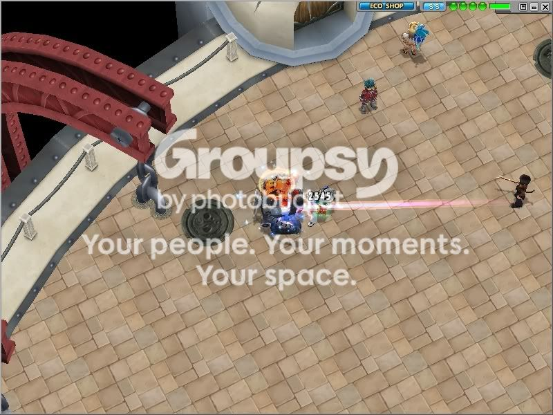
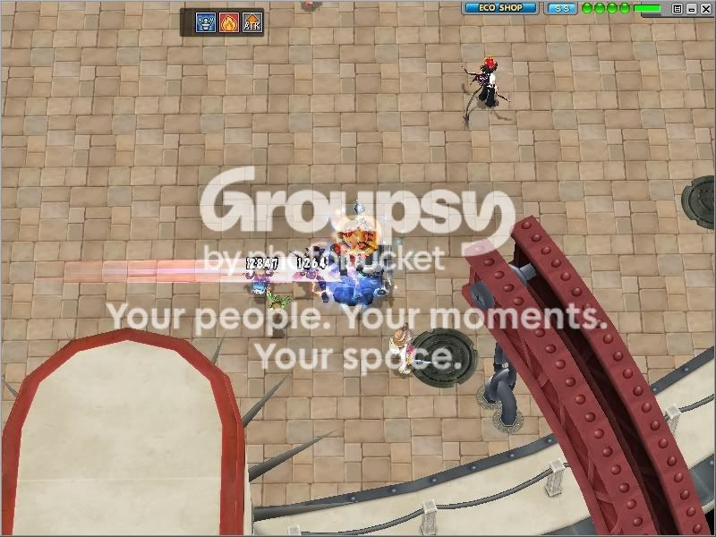

ขอความเห็นหน่อยค้าฟ จะเอาสกิลอะไรไปดีตอนสวิช
ระหว่าง Fire add กับ Stone damage
ระหว่าง Fire add กับ Stone damage
http://eco.froztic.in.th/archive/ecofanclub/
http://eco.froztic.in.th/archive/ecofanclub/viewtopic.php?f=16&t=5918


MR.BR เขียน:ขอความเห็นหน่อยค้าฟ จะเอาสกิลอะไรไปดีตอนสวิช
ระหว่าง Fire add กับ Stone damage
kururu เขียน:เพิ่มผลการทดสอบสกิล Lovage Cannon + OverTune + Over Run
ผู้ร่วมทดสอบ พีทคุงคนเดิมจ้า (HaseoXthForm : commando 95/50 Vit10)
ดู Dmg ซะก่อน หุหุหุ
คราวนี้ลองทดสอบกับ วินคุง (Win : Gambler 95/50 Vit100)
Dmg ก็ยังรุนแรงพอที่จะทำให้ตายได้ อิอิอิ
และจากการทดสอบกับหินใน nvn แล้ว ความรุนแรงจะอยู่ที่ 3000+*5 รุนแรงมั่กๆ
แต่เนื่องจากการใช้ over run ทำให้ไม่สามารถควบคุมตัวละครได้จึงทำให้ใช้ได้ยากมากใน nvn ใช้ฆ่าคนอื่นแทบจะไมได้เลย เพราะตายก่อนจะได้ใช้ คิคิคิ (เวทย์เอเล 50 เนี่ย ยังไงก้ไม่รอดเนาะ ร่ายสะท้อนเวทย์ยังไม่ทันเลย)
ใครอยากรู้อยากลอง ก็ลองทดสอบดูน้า
ปล. Flame heart ไม่มีผลนะจ๊ะ
Senzt เขียน:Fire Add ก็มีผลนะ
MR.BR เขียน:อยากถามนิสนึงคับ
แขนหุ่นมันบัครึป่าวคับ ตียังไงก็มะตกเลยครับ นี่ก็ปาไป9ช.ม. กว่าละ
เเล้วมีคนในชั้น B-5 ที่ผมไปเจอเขาบอกหามา6วันละมะเห็นเเม้เเต่เงาเลย
Zyrem L. Winchester เขียน:MR.BR เขียน:อยากถามนิสนึงคับ
แขนหุ่นมันบัครึป่าวคับ ตียังไงก็มะตกเลยครับ นี่ก็ปาไป9ช.ม. กว่าละ
เเล้วมีคนในชั้น B-5 ที่ผมไปเจอเขาบอกหามา6วันละมะเห็นเเม้เเต่เงาเลย
ลองเอาตัวเลเวลไม่เกิน80ไปตีดู
95มัน orz